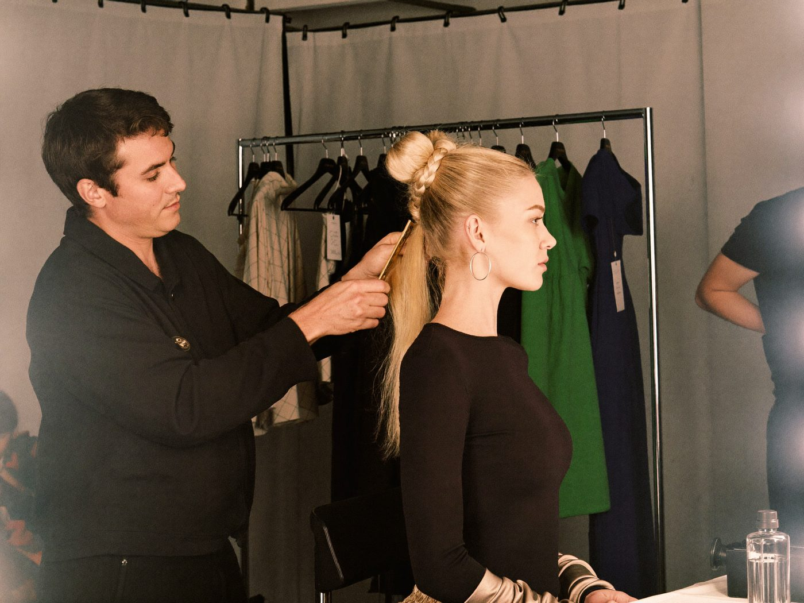

CAREER PROFILE 01
Hair & Make-up Artist
A hair and make-up artist specialises in hair styling and make-up — at fashion shows, for film, photo and TV productions or for companies in the industry. Clients include cosmetics and fashion companies, magazines and production firms. The job demands a high degree of flexibility and willingness to travel: to succeed, you should be able to show international work.